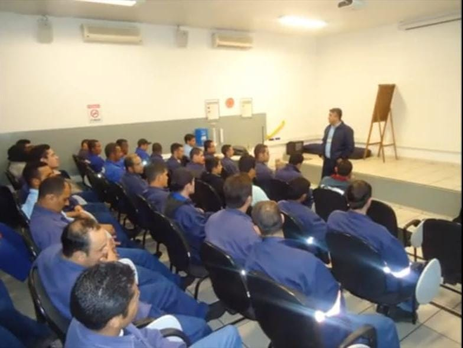

Novo Tempo Eventos
Transformando conhecimento em prevenção desde 2002
Fundada em 2002, a NOVO TEMPO EVENTOS é especializada na realização de SIPATs, palestras, treinamentos e eventos corporativos voltados à saúde, segurança do trabalho, qualidade de vida e desenvolvimento humano.